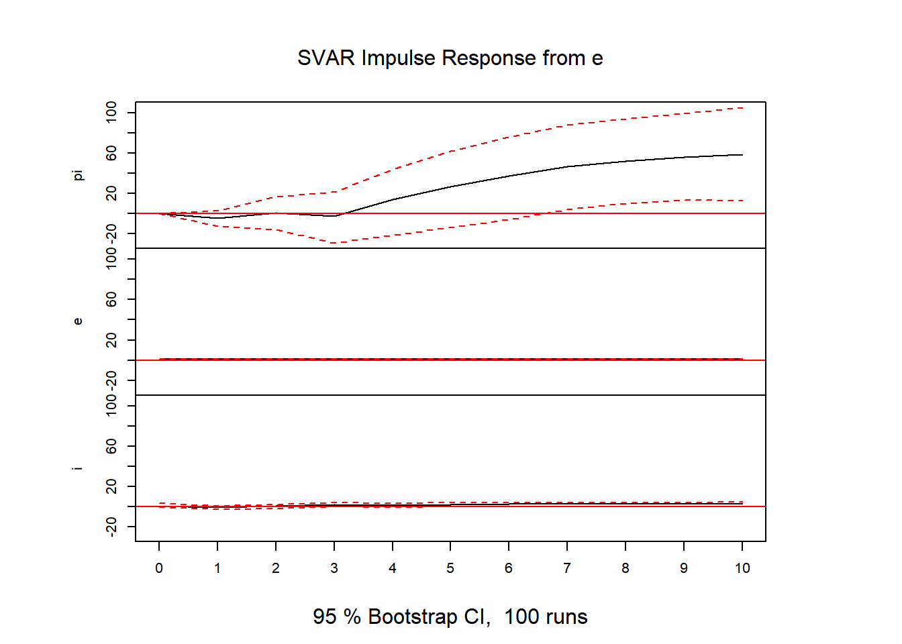

library(dplyr)
library(ipeadatar)
library(vars)
library(forecast)
library(sovereign)
library(svars)
library(BVAR)Practicing: Var model
Practicing a Vector Autorregressive Model
The model I practice will be a bivariate VAR in which the variables will be the interest rate, the exchange rate and inflation. This model is usually seen in books as example.
The series will be used are “IPCA - geral - índice (dez. 1993 = 100)”,
“Taxa de câmbio - R$ / US$ - comercial - compra - fim período” and
“Taxa de juros - Selic - fixada pelo Copom”.
pi <- ipeadatar::ipeadata('PRECOS12_IPCA12') %>%
dplyr::filter(date > "1996-07-01", date <= "2024-01-01") %>%
dplyr::select(value) %>%
ts(., start = 1996, frequency = 12)
e <- ipeadatar::ipeadata('BM12_ERCF12') %>%
dplyr::filter(date > "1996-07-01", date <= "2024-01-01") %>%
dplyr::select(value) %>%
ts(., start = 1996, frequency = 12)
i <- ipeadatar::ipeadata('BM366_TJOVER366') %>%
dplyr::filter(date > "1996-07-01", date <= "2024-01-01") %>%
dplyr::group_by(lubridate::year(date), lubridate::month(date)) %>%
dplyr::slice(dplyr::n()) %>%
dplyr::ungroup() %>%
dplyr::select(value) %>%
ts(., start = 1996, frequency = 12)
data_var = cbind(pi, e, i)
plot(data_var)We now need the amount of lags before estimate the model
vars::VARselect(data_var)$selection
AIC(n) HQ(n) SC(n) FPE(n)
5 2 2 5
$criteria
1 2 3 4 5 6 7
AIC(n) 3.573617 2.945164 2.982456 2.965769 2.936609 2.966282 2.945749
HQ(n) 3.630045 3.043914 3.123528 3.149162 3.162324 3.234317 3.256106
SC(n) 3.714929 3.192460 3.335737 3.425033 3.501857 3.637514 3.722965
FPE(n) 35.645415 19.014184 19.737443 19.412228 18.856538 19.427723 19.037313
8 9 10
AIC(n) 2.956756 2.977832 3.006184
HQ(n) 3.309434 3.372832 3.443506
SC(n) 3.839956 3.967016 4.101353
FPE(n) 19.253887 19.671643 20.247128We choose 6 lags in order to estimate our model
est_model <- vars::VAR(data_var, lag.max = 9)
summary(est_model)
VAR Estimation Results:
=========================
Endogenous variables: pi, e, i
Deterministic variables: const
Sample size: 325
Log Likelihood: -1805.158
Roots of the characteristic polynomial:
1.004 0.9744 0.8003 0.8003 0.6723 0.6723 0.6412 0.6412 0.6297 0.6297 0.6124 0.6124 0.5524 0.5524 0.5504
Call:
vars::VAR(y = data_var, lag.max = 9)
Estimation results for equation pi:
===================================
pi = pi.l1 + e.l1 + i.l1 + pi.l2 + e.l2 + i.l2 + pi.l3 + e.l3 + i.l3 + pi.l4 + e.l4 + i.l4 + pi.l5 + e.l5 + i.l5 + const
Estimate Std. Error t value Pr(>|t|)
pi.l1 1.58036 0.05545 28.499 < 2e-16 ***
e.l1 -4.45298 4.21801 -1.056 0.291927
i.l1 -0.07580 0.30079 -0.252 0.801210
pi.l2 -0.60196 0.10273 -5.859 1.19e-08 ***
e.l2 11.80482 5.84390 2.020 0.044244 *
i.l2 0.14652 0.32213 0.455 0.649551
pi.l3 0.06937 0.10666 0.650 0.515965
e.l3 -12.98677 5.89580 -2.203 0.028353 *
i.l3 0.20255 0.36198 0.560 0.576192
pi.l4 -0.14892 0.10136 -1.469 0.142801
e.l4 23.97950 5.97906 4.011 7.60e-05 ***
i.l4 -0.26203 0.32074 -0.817 0.414593
pi.l5 0.10030 0.05467 1.835 0.067515 .
e.l5 -15.38863 4.37380 -3.518 0.000499 ***
i.l5 -0.31720 0.29794 -1.065 0.287865
const 7.10967 3.94517 1.802 0.072501 .
---
Signif. codes: 0 '***' 0.001 '**' 0.01 '*' 0.05 '.' 0.1 ' ' 1
Residual standard error: 11.62 on 309 degrees of freedom
Multiple R-Squared: 0.9999, Adjusted R-squared: 0.9999
F-statistic: 3.898e+05 on 15 and 309 DF, p-value: < 2.2e-16
Estimation results for equation e:
==================================
e = pi.l1 + e.l1 + i.l1 + pi.l2 + e.l2 + i.l2 + pi.l3 + e.l3 + i.l3 + pi.l4 + e.l4 + i.l4 + pi.l5 + e.l5 + i.l5 + const
Estimate Std. Error t value Pr(>|t|)
pi.l1 -0.0008991 0.0007437 -1.209 0.2276
e.l1 0.9562913 0.0565680 16.905 <2e-16 ***
i.l1 0.0010283 0.0040340 0.255 0.7990
pi.l2 0.0011254 0.0013778 0.817 0.4146
e.l2 0.1128783 0.0783729 1.440 0.1508
i.l2 -0.0046744 0.0043201 -1.082 0.2801
pi.l3 0.0011700 0.0014305 0.818 0.4140
e.l3 -0.1189215 0.0790690 -1.504 0.1336
i.l3 -0.0003200 0.0048546 -0.066 0.9475
pi.l4 -0.0031380 0.0013594 -2.308 0.0216 *
e.l4 -0.0050170 0.0801856 -0.063 0.9502
i.l4 0.0039112 0.0043015 0.909 0.3639
pi.l5 0.0017525 0.0007331 2.390 0.0174 *
e.l5 0.0397764 0.0586573 0.678 0.4982
i.l5 -0.0015589 0.0039957 -0.390 0.6967
const 0.0564144 0.0529089 1.066 0.2871
---
Signif. codes: 0 '***' 0.001 '**' 0.01 '*' 0.05 '.' 0.1 ' ' 1
Residual standard error: 0.1558 on 309 degrees of freedom
Multiple R-Squared: 0.9852, Adjusted R-squared: 0.9844
F-statistic: 1368 on 15 and 309 DF, p-value: < 2.2e-16
Estimation results for equation i:
==================================
i = pi.l1 + e.l1 + i.l1 + pi.l2 + e.l2 + i.l2 + pi.l3 + e.l3 + i.l3 + pi.l4 + e.l4 + i.l4 + pi.l5 + e.l5 + i.l5 + const
Estimate Std. Error t value Pr(>|t|)
pi.l1 0.008695 0.010459 0.831 0.40640
e.l1 -0.939091 0.795535 -1.180 0.23873
i.l1 0.422066 0.056731 7.440 1.01e-12 ***
pi.l2 -0.002396 0.019376 -0.124 0.90167
e.l2 1.086983 1.102186 0.986 0.32480
i.l2 0.558330 0.060756 9.190 < 2e-16 ***
pi.l3 -0.003272 0.020117 -0.163 0.87090
e.l3 2.049312 1.111975 1.843 0.06629 .
i.l3 0.122424 0.068272 1.793 0.07392 .
pi.l4 0.001185 0.019117 0.062 0.95063
e.l4 -1.524548 1.127679 -1.352 0.17739
i.l4 -0.113002 0.060493 -1.868 0.06271 .
pi.l5 -0.004670 0.010310 -0.453 0.65089
e.l5 -0.546707 0.824919 -0.663 0.50799
i.l5 -0.095441 0.056193 -1.698 0.09043 .
const 2.221276 0.744077 2.985 0.00306 **
---
Signif. codes: 0 '***' 0.001 '**' 0.01 '*' 0.05 '.' 0.1 ' ' 1
Residual standard error: 2.191 on 309 degrees of freedom
Multiple R-Squared: 0.8905, Adjusted R-squared: 0.8851
F-statistic: 167.5 on 15 and 309 DF, p-value: < 2.2e-16
Covariance matrix of residuals:
pi e i
pi 134.93583 -0.08023 0.66210
e -0.08023 0.02427 0.02534
i 0.66210 0.02534 4.79990
Correlation matrix of residuals:
pi e i
pi 1.00000 -0.04433 0.02602
e -0.04433 1.00000 0.07424
i 0.02602 0.07424 1.00000We still need to do test to check our residuals
vars::serial.test(est_model, lags.pt = 10, type = "PT.adjusted")
Portmanteau Test (adjusted)
data: Residuals of VAR object est_model
Chi-squared = 57.728, df = 45, p-value = 0.09655vars::serial.test(est_model, lags.pt = 10, type = "BG")
Breusch-Godfrey LM test
data: Residuals of VAR object est_model
Chi-squared = 63.186, df = 45, p-value = 0.03797vars::normality.test(est_model)$JB
JB-Test (multivariate)
data: Residuals of VAR object est_model
Chi-squared = 40293, df = 6, p-value < 2.2e-16
$Skewness
Skewness only (multivariate)
data: Residuals of VAR object est_model
Chi-squared = 960.1, df = 3, p-value < 2.2e-16
$Kurtosis
Kurtosis only (multivariate)
data: Residuals of VAR object est_model
Chi-squared = 39332, df = 3, p-value < 2.2e-16vars::arch.test(est_model)
ARCH (multivariate)
data: Residuals of VAR object est_model
Chi-squared = 412.8, df = 180, p-value < 2.2e-16These tets demonstrate that the residuals are not autocorrelated, both by the Portmanteu test and the Breusch-Godfrey test. Besides that, the residuals are normally distributed and the test for heteroskedasticity reject the null hypotesis.
Now, we must estimate the structural var. For this we need the identification Matrix, where we choose the identification. For this study, we identify this by Cholesky. Where we set the inflation as the most exogenous variable, followed by the exchange rate and finally, the most endogenous, the interest rate.
a <- diag(1, 3)
a[lower.tri(a)] <- NA
est_svar <- SVAR(x = est_model, Amat = a,estmethod = 'direct')
summary(est_svar)
SVAR Estimation Results:
========================
Call:
SVAR(x = est_model, estmethod = "direct", Amat = a)
Type: A-model
Sample size: 325
Log Likelihood: -1383.465
Method: direct
Number of iterations: 170
Convergence code: 0
LR overidentification test:
LR overidentification
data: data_var
Chi^2 = -893, df = 3, p-value = 1
Estimated A matrix:
pi e i
pi 1.0000000 0.000 0
e 0.0006236 1.000 0
i -0.0055517 -1.067 1
Estimated B matrix:
pi e i
pi 1 0 0
e 0 1 0
i 0 0 1
Covariance matrix of reduced form residuals (*100):
pi e i
pi 100.00000 -0.06236 0.4886
e -0.06236 100.00004 106.7407
i 0.48861 106.74066 213.9387The first test is see whether the IFR are well behaved
vars::irf(est_svar) %>%
plot()

vars::fevd(est_svar) %>%
plot()
teste = id.dc(est_model)
svars::hd(teste, series = 1) %>%
plot()svars::hd(teste, series = 2) %>%
plot()svars::hd(teste, series = 3) %>%
plot()